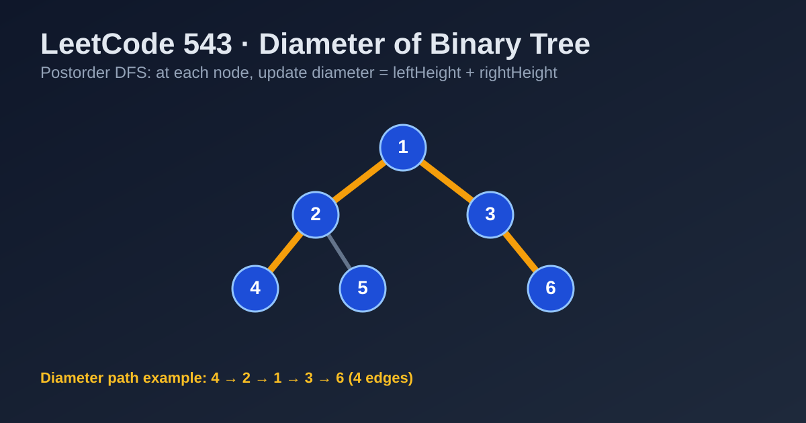

LeetCode 543: Diameter of Binary Tree (Postorder DFS)
LeetCode 543Binary TreeDFSInterviewToday we solve LeetCode 543 - Diameter of Binary Tree.
Source: https://leetcode.com/problems/diameter-of-binary-tree/

English
Problem Summary
Given the root of a binary tree, return the length of the tree's diameter. The diameter is the number of edges on the longest path between any two nodes. The path may or may not pass through the root.
Key Insight
At each node, if we know leftHeight and rightHeight, then the longest path passing through this node is leftHeight + rightHeight. The global diameter is the maximum of this value over all nodes.
Brute Force and Why It Is Slow
A brute-force idea is: for every node, compute subtree heights from scratch and evaluate leftHeight + rightHeight. That repeats height computations many times and can degrade to O(n^2) on skewed trees.
Optimal Algorithm (Postorder DFS)
1) Run DFS in postorder so children are processed before parent.
2) Function returns subtree height in edges-count style via node count height.
3) For each node, compute through = leftHeight + rightHeight.
4) Update global answer with max(diameter, through).
5) Return 1 + max(leftHeight, rightHeight) to parent.
One traversal solves both local height and global diameter update.
Complexity Analysis
Time: O(n) because each node is visited once.
Space: O(h) recursion stack, where h is tree height (worst case O(n), balanced case O(log n)).
Common Pitfalls
- Confusing node count vs edge count for diameter.
- Returning diameter from DFS instead of height (wrong state design).
- Assuming longest path must pass root.
- Forgetting to keep global maximum while returning local heights.
Reference Implementations (Java / Go / C++ / Python / JavaScript)
/**
* Definition for a binary tree node.
* public class TreeNode {
* int val;
* TreeNode left;
* TreeNode right;
* TreeNode() {}
* TreeNode(int val) { this.val = val; }
* TreeNode(int val, TreeNode left, TreeNode right) {
* this.val = val;
* this.left = left;
* this.right = right;
* }
* }
*/
class Solution {
private int ans = 0;
public int diameterOfBinaryTree(TreeNode root) {
height(root);
return ans;
}
private int height(TreeNode node) {
if (node == null) return 0;
int left = height(node.left);
int right = height(node.right);
ans = Math.max(ans, left + right);
return 1 + Math.max(left, right);
}
}/**
* Definition for a binary tree node.
* type TreeNode struct {
* Val int
* Left *TreeNode
* Right *TreeNode
* }
*/
func diameterOfBinaryTree(root *TreeNode) int {
ans := 0
var height func(*TreeNode) int
height = func(node *TreeNode) int {
if node == nil {
return 0
}
left := height(node.Left)
right := height(node.Right)
if left+right > ans {
ans = left + right
}
if left > right {
return left + 1
}
return right + 1
}
height(root)
return ans
}/**
* Definition for a binary tree node.
* struct TreeNode {
* int val;
* TreeNode *left;
* TreeNode *right;
* TreeNode() : val(0), left(nullptr), right(nullptr) {}
* TreeNode(int x) : val(x), left(nullptr), right(nullptr) {}
* TreeNode(int x, TreeNode *left, TreeNode *right) : val(x), left(left), right(right) {}
* };
*/
class Solution {
public:
int ans = 0;
int diameterOfBinaryTree(TreeNode* root) {
height(root);
return ans;
}
int height(TreeNode* node) {
if (!node) return 0;
int left = height(node->left);
int right = height(node->right);
ans = max(ans, left + right);
return 1 + max(left, right);
}
};# Definition for a binary tree node.
# class TreeNode:
# def __init__(self, val=0, left=None, right=None):
# self.val = val
# self.left = left
# self.right = right
class Solution:
def diameterOfBinaryTree(self, root):
ans = 0
def height(node):
nonlocal ans
if not node:
return 0
left = height(node.left)
right = height(node.right)
ans = max(ans, left + right)
return 1 + max(left, right)
height(root)
return ans/**
* Definition for a binary tree node.
* function TreeNode(val, left, right) {
* this.val = (val===undefined ? 0 : val)
* this.left = (left===undefined ? null : left)
* this.right = (right===undefined ? null : right)
* }
*/
var diameterOfBinaryTree = function(root) {
let ans = 0;
function height(node) {
if (!node) return 0;
const left = height(node.left);
const right = height(node.right);
ans = Math.max(ans, left + right);
return 1 + Math.max(left, right);
}
height(root);
return ans;
};中文
题目概述
给定二叉树根节点 root，返回这棵树的直径。直径是任意两节点之间最长路径上的边数，这条路径不一定经过根节点。
核心思路
对于每个节点，如果知道左子树高度 leftHeight 和右子树高度 rightHeight，那么“经过该节点”的最长路径长度就是 leftHeight + rightHeight。全局最大值就是答案。
暴力解法与不足
暴力做法是：把每个节点都当作路径中点，再重复计算左右子树高度。这样会产生大量重复计算，最坏情况下（链状树）会退化到 O(n^2)。
最优算法（后序 DFS）
1）以后序遍历处理节点（先子树、后当前节点）。
2）递归函数返回当前子树高度。
3）在当前节点计算 leftHeight + rightHeight 并更新全局直径。
4）向父节点返回 1 + max(leftHeight, rightHeight)。
5）遍历结束后，全局最大值即为答案。
复杂度分析
时间复杂度：O(n)。
空间复杂度：O(h)（递归栈），平衡树约 O(log n)，最坏 O(n)。
常见陷阱
- 把“节点数”当成“边数”导致答案偏 1。
- 递归返回值设计错误：应返回高度，而不是直径。
- 误以为最长路径必须经过根节点。
- 忘记在每个节点处更新全局最大值。
多语言参考实现（Java / Go / C++ / Python / JavaScript）
class Solution {
private int ans = 0;
public int diameterOfBinaryTree(TreeNode root) {
height(root);
return ans;
}
private int height(TreeNode node) {
if (node == null) return 0;
int left = height(node.left);
int right = height(node.right);
ans = Math.max(ans, left + right);
return 1 + Math.max(left, right);
}
}func diameterOfBinaryTree(root *TreeNode) int {
ans := 0
var height func(*TreeNode) int
height = func(node *TreeNode) int {
if node == nil {
return 0
}
left := height(node.Left)
right := height(node.Right)
if left+right > ans {
ans = left + right
}
if left > right {
return left + 1
}
return right + 1
}
height(root)
return ans
}class Solution {
public:
int ans = 0;
int diameterOfBinaryTree(TreeNode* root) {
height(root);
return ans;
}
int height(TreeNode* node) {
if (!node) return 0;
int left = height(node->left);
int right = height(node->right);
ans = max(ans, left + right);
return 1 + max(left, right);
}
};class Solution:
def diameterOfBinaryTree(self, root):
ans = 0
def height(node):
nonlocal ans
if not node:
return 0
left = height(node.left)
right = height(node.right)
ans = max(ans, left + right)
return 1 + max(left, right)
height(root)
return ansvar diameterOfBinaryTree = function(root) {
let ans = 0;
function height(node) {
if (!node) return 0;
const left = height(node.left);
const right = height(node.right);
ans = Math.max(ans, left + right);
return 1 + Math.max(left, right);
}
height(root);
return ans;
};
Comments